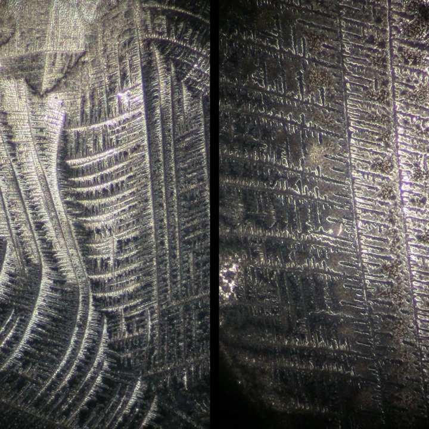

“I had an amazing experience with Fiona, who uses microscopy to photograph and film the extraordinary patterns and formations found within our own bodily fluids. As a water researcher specialising in crystallography, what fascinated me most was how similar the images in my urine were to those I’ve documented through my own work.
I could clearly recognise the Information Hydroglyph throughout my sample, which was particularly interesting to me. There was also a beautiful formation resembling an embryo, which made the experience even more special and thought-provoking.
Another fascinating connection between our work is the significance of light. It plays a key role in Fiona’s process, mirroring my own research into how water interacts with it to reveal intricate structures and patterns.
Seeing such familiar forms within the waters of my own body gave me another perspective on the connections between water, consciousness and information. I’m very grateful to Fiona for sharing this experience with me.”
— Veda AustinWater Researcher